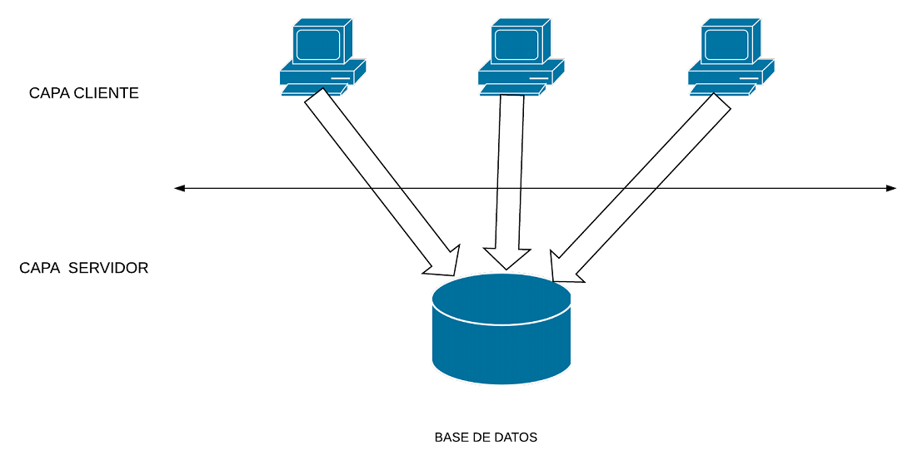
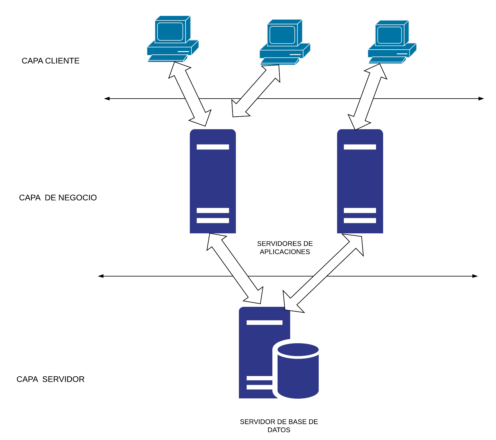

En el modelo de dos capas, una aplicación se comunica directamente a la fuente de datos. Esto necesita un conector JDBC que pueda comunicar con la fuente de datos específica a la que acceder.
Los comandos o instrucciones del usuario se envían a la base de datos y los resultados se devuelven al usuario. La fuente de datos puede estar ubicada en otra máquina a la que el usuario se conecte por red. A esto se denomina configuración cliente/servidor, con la máquina del usuario como cliente y la máquina que aloja los datos como servidor.

En el modelo de tres capas, los comandos se envían a una capa intermedia de servicios, la cual envía los comandos a la fuente de datos. La fuente de datos procesa los comandos y envía los resultados de vuelta la capa intermedia, desde la que luego se le envían al usuario.

Hoy en día, hay cinco tipos de controladores JDBC en uso:
- Tipo 1: puente JDBC-ODBC
- Tipo 2: controlador parcial de Java
- Tipo 3: controlador Java puro para middleware de base de datos
- Tipo 4: controlador Java puro para directo a base de datos
- Tipo 5: controladores altamente funcionales con un rendimiento superior
Modelo de diseño de software en el que las tareas se reparten entre los proveedores de recursos o servicios, llamados servidores, y los demandantes, llamados clientes. Un cliente realiza peticiones a otro programa, el servidor, quien le da respuesta. Esta idea también se puede aplicar a programas que se ejecutan sobre una sola computadora, aunque es más ventajosa en un sistema operativo multiusuario distribuido a través de una red de computadoras.